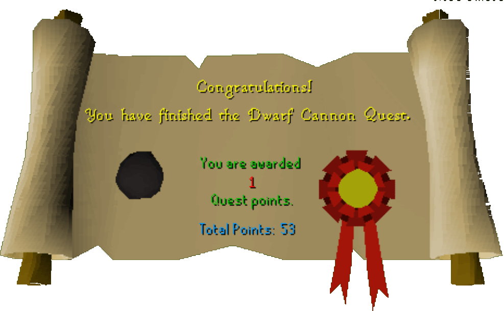

Dwarf Cannon
Description: For several years now the dwarven black guard have been developing the lastest in projectile warfare. Now with the constant attack of goblin renegades, the dwarven troops who protect the mines need to put this secret weapon into action. Only with your help can the true power of this cannon be harnessed!Difficulty: Novice
Length: Short
Items & Skills Needed:
NoneRecommended:
- 20 Agility is required to cross the log bridge
- Food at very low combat levels
Reward: 1 Quest point, 750 Crafting XP, the ability to buy a multicannon for 750k (or individual pieces for 200k each), the ability to make cannonballs
Instructions:
Get 6 railings from the commander after agreeing to help him fix the fence to keep out those pesky goblins.
Walk along the fence, searching each section, and repair each broken fence. (These are not the same locations as in RS1.) Below is a map of where the broken fences are located.

After quite a while of searching — and praying you didn't miss one — go back and talk to the commander. He'll reveal that his watchtower, just south of the base, has stopped communications. Go and investigate.
Grab the dwarf remains in the tower (poor little guy), and walk back to the commander with the bad news...
After informing the commander, he'll say that the dwarf who was killed had a son, Gilob. Now it's time to track down the dwarf kid and his captors.
Head southeast around the Fishing Guild to a cave — it's right by the windmill to Ardougne. Enter and go northwest to the corner room.
Search the crate. The child will jump out, talk for a brief moment, and run back to the commander. Head back to the commander.
Upon your return, you learn that the base cannon needs fixing. Take the toolkit and go into the shed. Inspect each part until you finally fix all of them. You MAY fail MULTIPLE times.
Talk to the commander once again. He sends you to South Ice Mountain, to the dwarf base there, to get vital information about the cannons. These guys are real organized, aren't they?
A Falador teleport is really handy right here. Make your way to the Ice Mountain. In the west building is a dwarf named Nulodion. He'll give you the ammo mould and instructions that he forgot to send before.
If you have the runes, teleport to Camelot. Once you get there by your chosen mode of transportation, return to the commander. Talk to him once more, and at long last, you receive your reward.
Congratulations, Quest Complete!

This quest guide was written on RuneHQ by Gnat88. Thanks to DNKevin and Neo 9001 for corrections.
This quest guide was entered into the database on Tue, Mar 02, 2004, at 10:05:02 PM by Weezy and was last updated on Thu, Apr 15, 2004, at 11:24:33 AM.